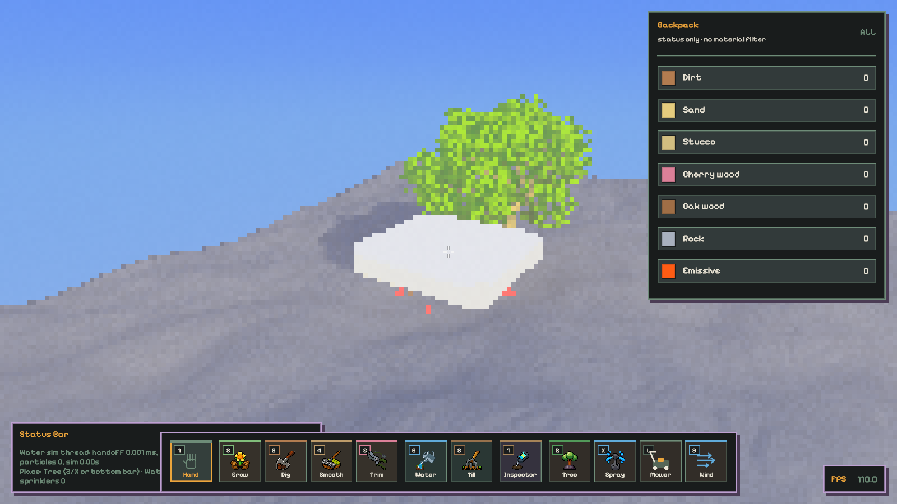
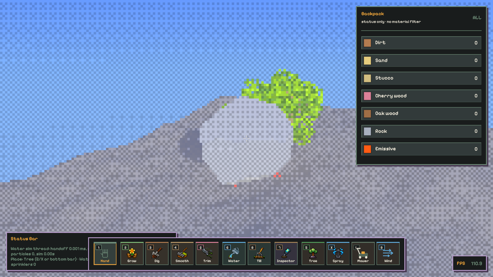

Candidate only · no art approval · no performance acceptance
The geometry below is exported from the authoritative Rust seed → triangle generator, not reauthored JavaScript. This Canvas view is a simulated offline presentation, not the native renderer and not evidence of voxel/Contree execution. Native Vulkan captures are shown separately below.
Paving slabs keep broad horizontal tops and stable bottoms, with sparse corner cuts and narrow chamfers. Landscape rocks use bounded asymmetric cutting planes; this candidate is intentionally convex, with no holes, noise-folded faces or tiny detached chips. Native material shading reuses the garden palette; the offline preview uses model face colors.
These are real app screenshots produced in this worktree by the documented fixture. If the target artifacts have been cleaned, the links will be unavailable; rerun scripts/validate-stone-preview.sh. They are not generated by this HTML.

These are native Release captures from the integrated main checkout, not Canvas reconstructions. Rock seed 42 uses the same bottom pivot, shared model view bank and count as flowers/apples/mesh particles. The upper-rock coverage mask is repeatable in continuous mode and differs for 128/256 directions. Integration evidence and limits; no final art/motion/performance acceptance.

Open Debug Panel → search Stone Rendering → enable Stone preview: enabled. Leave Stone: direct triangle rendering (A/B) unchecked for voxel/Contree; check it for the experimental direct path. Search Stone Geometry for type, seed, dimensions and silhouette controls. Use the normal Save button. Both modes use the same garden world units, object-local bottom pivot and rigid rotation. The preview is inspection-only: no gameplay collider, building mode or permanent world edits.